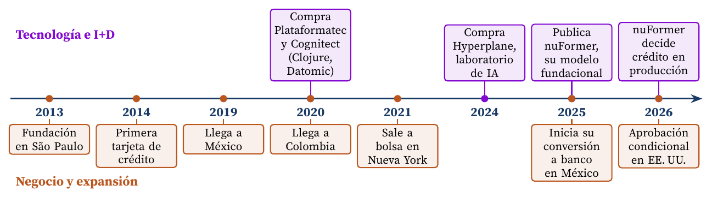
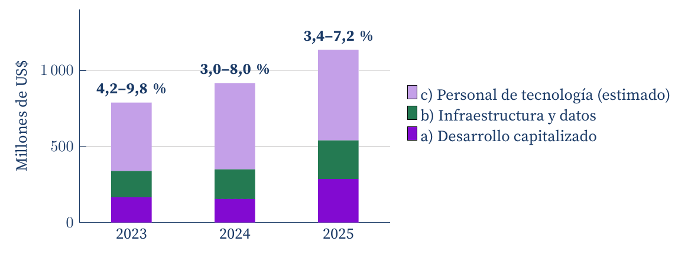

Una estimación a partir de su 20-F, cuando la cifra no aparece en los estados financieros
Carlos Luis Rojas Aragonés
Elegí Nubank (Nu Holdings), el banco digital que ha puesto a correr a la banca tradicional en Brasil, México y Colombia. Es relevante para mi hoja de ruta porque su núcleo bancario, NuCore, es propio y está construido sobre la nube (Nu Holdings, 2026a): es un caso real de lo que una plataforma moderna puede hacer frente a sistemas heredados.
David Vélez, colombiano con MBA de Stanford, llegó a Brasil como inversor de Sequoia. Ese proyecto no prosperó, pero le dio la idea de un neobanco (Lankenau, 2023). Nubank se fundó en 2013, emitió su primera tarjeta de crédito en 2014 y llegó a México en 2019 y a Colombia en 2020. En 2021 salió a la Bolsa de Nueva York y recaudó 2 300 millones de dólares (Nu Holdings, 2026a).
A finales de 2025 sumaba 131 millones de clientes: 113 millones en Brasil (el 62 % de los adultos del país), 14 millones en México y más de 4 millones en Colombia. En abril de 2025 recibió la autorización para iniciar su conversión en banco en México y, en enero de 2026, la aprobación condicional para abrir un banco nacional en Estados Unidos (Nu Holdings, 2026a). La Figura 1 resume el recorrido.

Figura 1. Hitos de Nubank. Sobre el eje, las apuestas tecnológicas; bajo el eje, el crecimiento del negocio (Braithwaite et al., 2025; Nu Holdings, 2026a, 2026c; Nubank, 2020).
Nubank decidió construir en lugar de comprar. Su núcleo bancario corre en microservicios sobre Amazon Web Services, escritos en Clojure y apoyados en un libro contable inmutable con Datomic, una base de datos de la que hoy es dueña. En 2025 promedió más de 900 despliegues de código por día hábil (Nu Holdings, 2026a).
Varias de sus adquisiciones fueron, en la práctica, compras de capacidad de I+D. En 2020 adquirió Cognitect, la empresa detrás de Clojure y Datomic, cuando tenía unos 600 ingenieros de un total de 2 700 empleados (Nubank, 2020). En 2024 compró Hyperplane, una plataforma estadounidense de IA, y con ella trajo investigadores de Google, Meta, Apple y Microsoft (Nu Holdings, 2026c). De ahí salió nuFormer, un modelo fundacional entrenado con datos de transacciones (Braithwaite et al., 2025) que ya decide crédito en su segmento más grande en Brasil y redujo el ciclo de experimentación de meses a un día (Nu Holdings, 2026c). Hoy el 42 % de sus 10 027 empleados trabaja en tecnología (Nu Holdings, 2026a).
Nubank no reporta una línea de I+D: su 20-F indica que ese gasto está dentro de los gastos generales y de administración, junto con back-office y overhead (Nu Holdings, 2026a). Por eso lo estimo como un rango con tres componentes del propio 20-F:
El rango bajo suma a y b; el alto suma los tres (Tabla 1).
| Año | a) Capitalizado | b) Infraestructura | c) Personal | I+D estimado | % de ingresos |
|---|---|---|---|---|---|
| 2023 | 165 | 175 | 449 | 340 a 789 | 4,2 a 9,8 |
| 2024 | 155 | 195 | 566 | 350 a 916 | 3,0 a 8,0 |
| 2025 | 286 | 255 | 595 | 541 a 1 135 | 3,4 a 7,2 |
Tabla 1. Inversión estimada en I+D de Nubank, en millones de US$. Ingresos: 8 029 (2023), 11 517 (2024) y 15 775 (2025) (Nu Holdings, 2026a).
La inversión creció un 44 % entre 2023 y 2025 en el rango alto (Figura 2), pero los ingresos casi se duplicaron, de modo que la intensidad bajó de 4,2-9,8 % a 3,4-7,2 %. El desarrollo capitalizado, la parte más cercana a crear producto nuevo, casi se duplicó en 2025. Por cliente, la inversión se mantuvo entre 8 y 9 dólares al año mientras la base crecía un 39 %.

Figura 2. Inversión estimada en I+D de Nubank por componente. Sobre cada barra, la intensidad en I+D (rango bajo y alto, como porcentaje de los ingresos) (Nu Holdings, 2026a).
Vélez sostiene que un modelo de crédito no se construye sin pérdidas y que muchas de ellas funcionan como inversión en I+D, incluso como CAPEX, porque el modelo necesita equivocarse para aprender (Lankenau, 2023). Si se aceptara esa lectura, la cifra sería mucho mayor: las pérdidas esperadas de crédito pasaron de 2 285 a 4 205 millones de dólares entre 2023 y 2025 (Nu Holdings, 2026a). No las incluyo en la estimación, porque no hay forma de separar la parte que «enseña» de la que es simple riesgo de negocio, pero muestran que en un banco basado en datos el aprendizaje también se paga con capital.
Nubank muestra que la intensidad en I+D no basta para juzgar a una empresa: puede bajar como porcentaje mientras la inversión crece, si la plataforma escala. Lo decisivo fue invertir en la base (lenguaje, base de datos, nube) antes de necesitarla, y comprar talento cuando construirlo era más lento. La limitación de este ejercicio es clara: mi cifra es una estimación, no un dato auditado, y la principal fuente de incertidumbre es qué parte del personal se dedica realmente a desarrollar.
Braithwaite, D. T., Cavalcanti, M., McEver, R. A., et al. (2025). Your spending needs attention: Modeling financial habits with transformers. arXiv. https://doi.org/10.48550/arXiv.2507.23267
Lankenau, R. (2023, 20 de octubre). Nu: Lo que hay detrás del neobanco más grande del mundo. Whitepaper. https://www.whitepaper.mx/p/nu-lo-que-hay-detras-del-neobanco
Nu Holdings. (2026a). Annual report on Form 20-F for the fiscal year ended December 31, 2025 (Formulario 20-F). U.S. Securities and Exchange Commission. https://www.sec.gov/Archives/edgar/data/1691493/000129281426002166/nuform20f_2025.htm
Nu Holdings. (2026b, 25 de febrero). Nu Holdings Ltd. reports fourth quarter and full year 2025 financial results. Business Wire. https://www.businesswire.com/news/home/20260225967630/en/Nu-Holdings-Ltd.-Reports-Fourth-Quarter-and-Full-Year-2025-Financial-Results
Nu Holdings. (2026c, 11 de junio). Nubank details AI transformation strategy built on data, foundation models and democratized financial advice. https://nu.com/en/newsroom/company/nubank-details-ai-transformation-strategy-built-on-data-foundation-models-and-democratized-financial-advice
Nubank. (2020, 23 de julio). Nubank acquires US company Cognitect, the team behind Clojure and Datomic. Building Nubank. https://building.nu.com/nubank-acquires-cognitect-press-release